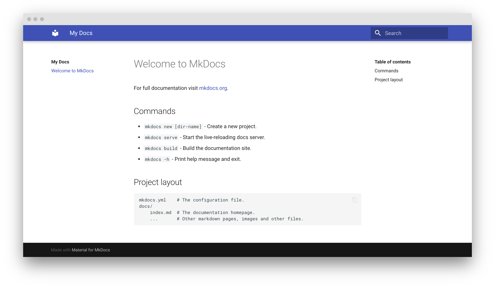

Material for MkDocs 快速入门
Material for MkDocs 是 MkDocs 之上的强大文档框架，MkDocs 是项目文档的静态站点生成器。如果您熟悉 Python，则可以使用 Python 包管理器 pip 安装 Material for MkDocs。
安装
Material for MkDocs 以 Python 包的形式发布，可以使用 pip 进行安装，最好使用虚拟环境进行安装。打开一个终端并使用以下命令安装 Material for MkDocs：
创建您的网站
安装 Material for MkDocs 后，您可以使用 mkdocs 可执行文件引导项目文档。转到您希望项目所在的目录并输入：
这将创建以下结构：
配置
最小配置
只需设置site_name并将以下行添加到 mkdocs.yml 即可启用主题：
高级配置
Material for MkDocs 带有许多配置选项。设置部分非常详细地解释了如何配置和自定义颜色、字体、图标等：
模板
如果您想快速开始一个新项目，您可以使用我们不断增长的模板集合之一：Blog Social cards
在写入时预览
MkDocs 包括一个实时预览服务器，因此您可以在编写文档时预览您的更改。服务器将在保存时自动重建站点。从以下内容开始：
将浏览器指向 localhost：8000，您应该会看到：

构建您的网站
完成编辑后，您可以使用以下方法从 Markdown 文件构建静态网站：
此目录的内容构成了您的项目文档。无需作数据库或服务器，因为它是完全独立的。该站点可以托管在 GitHub Pages、GitLab Pages、您选择的 CDN 或您的私有 Web 空间上。
发布您的网站
在 git 仓库中托管项目文档的好处是能够在推送新更改时自动部署它。MkDocs 让这一切变得非常简单。
GitHub Pages
如果您已经在 GitHub 上托管了您的代码，GitHub Pages 无疑是发布项目文档的最便捷方式。它是免费的，而且很容易设置。
使用 GitHub Actions，您可以自动部署项目文档。在仓库的根目录中，创建一个新的 GitHub Actions 工作流程，例如 .github/workflows/ci.yml，然后复制并粘贴以下内容：
GitLab Pages
如果您在 GitLab 上托管代码，则可以使用 GitLab CI 任务运行器部署到 Pages GitLab 页面。在存储库的根目录中，创建一个名为 .gitlab-ci.yml 的任务定义，然后复制并粘贴以下内容：
定制
添加有用的东西
MkDocs 提供了多种自定义主题的方法。为了对 Material for MkDocs 进行一些小的调整，您只需将 CSS 和 JavaScript 文件添加到 docs 目录中即可。
添加 CSS
如果要调整某些颜色或更改某些元素的间距，可以在单独的样式表中执行此作。最简单的方法是在 docs 目录中创建一个新的样式表文件：
添加 JavaScript
如果您想集成另一个语法高亮工具或向主题添加一些自定义逻辑，请在 docs 目录中创建一个新的 JavaScript 文件：
扩展主题
如果您想更改 HTML 源（例如添加或删除某些部分），您可以扩展主题。MkDocs 支持主题扩展，这是一种无需从 git forking 即可覆盖 Material for MkDocs 部分内容的简单方法。这可确保您可以更轻松地更新到最新版本。
设置和主题结构
像往常一样在 mkdocs.yml 中启用 Material for MkDocs，并为覆盖创建一个新文件夹，然后使用 custom_dir 设置引用该文件夹：
覆盖部分
为了覆盖部分，我们可以将其替换为 overrides 目录中具有相同名称和位置的文件。例如，要替换原始的 footer.html 这个部分，请在 overrides 目录中创建一个新的 footer.html 文件：
覆盖块
除了覆盖部分，还可以覆盖（和扩展）模板块，这些块在模板内部定义并包装特定功能。为了设置块覆盖，请在 overrides 目录中创建一个 main.html 文件：
主题提供了以下模板块：
Block name
Purpose
analytics
Wraps the Google Analytics integration
announce
Wraps the announcement bar
config
Wraps the JavaScript application config
container
Wraps the main content container
content
Wraps the main content
extrahead
Empty block to add custom meta tags
fonts
Wraps the font definitions
footer
Wraps the footer with navigation and copyright
header
Wraps the fixed header bar
hero
Wraps the hero teaser (if available)
htmltitle
Wraps the 'title' tag
libs
Wraps the JavaScript libraries (header)
outdated
Wraps the version warning
scripts
Wraps the JavaScript application (footer)
site_meta
Wraps the meta tags in the document head
site_nav
Wraps the site navigation and table of contents
styles
Wraps the style sheets (also extra sources)
tabs
Wraps the tabs navigation (if available)